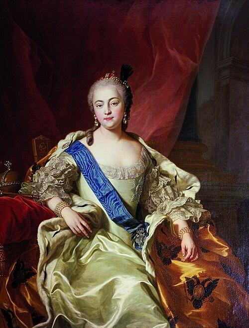

Елизавета Петровна — российская императрица, дочь Петра I Великого. Она пришла к власти в 1741 году в результате дворцового переворота и правила Российской империей более двадцати лет.
Елизавета пользовалась большой поддержкой гвардии и народа, так как считалась продолжательницей политики своего отца. После прихода к власти она стремилась укрепить государство и восстановить значение реформ Петра I.
Во время её правления большое внимание уделялось развитию культуры, науки и образования. В 1755 году был основан Московский университет, ставший одним из главных образовательных центров России.
В эпоху Елизаветы активно развивалась архитектура и искусство. Именно в это время были построены многие знаменитые дворцы и здания в стиле русского барокко. Большой вклад в развитие архитектуры внёс архитектор Бартоломео Растрелли.
Во внешней политике Россия принимала участие в Семилетней войне. Русская армия добилась серьёзных успехов и укрепила международное влияние Российской империи в Европе.
Елизавета Петровна вошла в историю как правительница, при которой Россия значительно усилила своё положение в мире, а культура и образование получили активное развитие. Её эпоха считается одним из ярких периодов XVIII века.
